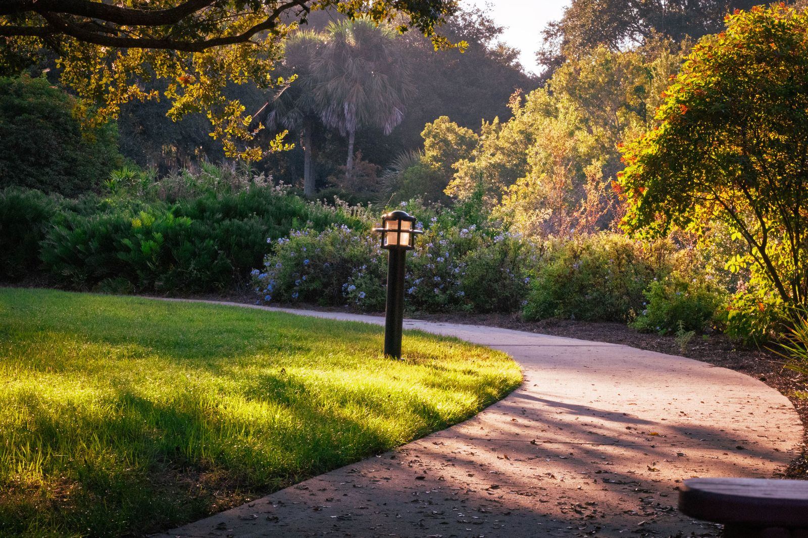
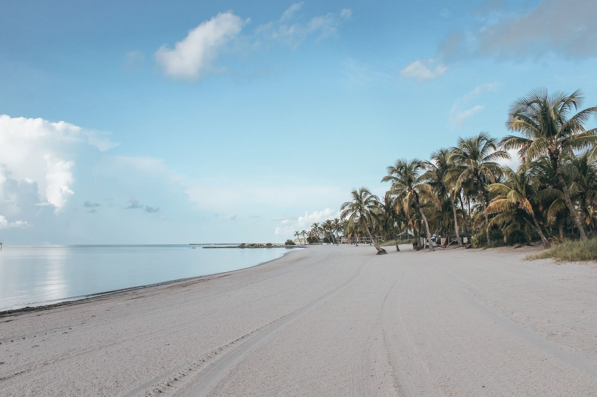

From Tulips to Tropicals: What This Yankee Had to Unlearn About Gardening in Florida
Reverse seasons, no winter dormancy, and soil that drinks water like a sponge. Here is everything my Northern instincts got wrong.
Read the postHi, I'm Maggie. After a lifetime of New York winters and a career I finally retired from, my husband and I packed up for the Gulf Coast. I thought I knew how to garden. Turns out I had to learn it all over again, and I'm sharing every muddy lesson here.

Three of my most-read posts about trading tulips for tropicals and figuring out what actually grows down here.
Reverse seasons, no winter dormancy, and soil that drinks water like a sponge. Here is everything my Northern instincts got wrong.
Read the post
Firebush, plumbago, crotons, and the herbs that refuse to wilt. The tough, gorgeous plants that earned a spot in my garden.
Read the post
Amending sand, surviving salt spray, and meeting the lubber grasshopper. The gritty realities of coastal Florida gardening.
Read the postI am not a master gardener with a certificate on the wall. I am a curious retiree with dirt under her nails, a stack of seed catalogs, and forty years of Northern habits I am slowly rewiring. Yankee Gardener is a place for real talk about what works, what flopped, and what I would do differently. Expect plant profiles tested in my own beds, seasonal to-do lists that finally make sense for the Gulf Coast, and the occasional story about the iguana who keeps eating my hibiscus. If you have just moved south and your thumb suddenly feels a lot less green, pull up a rocking chair. You are exactly who I am writing for.
Browse the journalWhether you have just unpacked the moving boxes or you have wintered here for years, there is something in the journal for you.
The mindset shifts that turned my frustrating first year around, from flipped seasons to the end of winter dormancy. If your trusty Northern habits suddenly stopped working, start here. I cover the planting calendar that finally made sense for the Gulf Coast and the instincts you can safely leave behind in the snow.
Honest profiles of the shrubs, flowers, and herbs that thrive when summer turns brutal. Firebush, plumbago, bougainvillea, crotons, native wildflowers, and the heat-proof herbs I keep by the kitchen door. Every plant here has been tested in my own sandy beds, so you get the real verdict, not the catalog version.
How I turned a yard of pale beach sand into beds that actually hold water and feed roots, plus how to handle salt spray, smarter watering, and the local wildlife. Yes, including the famous lubber grasshopper and the twice-a-year love bug invasion that every coastal gardener learns to wait out.
One email, once or twice a month. New posts, a seasonal reminder for Zone 9 and 10 gardeners, and whatever is blooming on my porch. No spam, just garden talk.